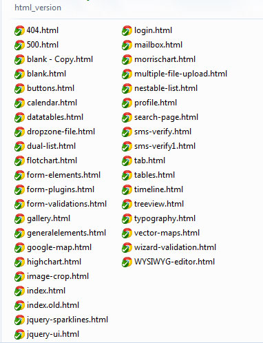

Thank you for purchasing Golabi Admin Responsive WebApp. If you have any questions that are beyond the scope of this help file, please feel free to email me via the email address above.
Golabi Admin WebApp - goes beyond the ordinary admin template. Its unique flat design and responsive layout is crafted one of a kind. Golabi Admin comes with 50+ customized jquery plugins. Golabi Admin Layout API lets you customize your project for almost any device - be it Mobile, Web or WebApp.
Golabi Admin is exclusively sold at Themeforest.net; please make sure you save your license ID for support and future upgrades.
Once you have successfully downloaded Golabi Admin from Themeforest.net, you will notice right away that the zip folder contains the following:
Click the html_version directory and you will arrive to the choices below:
You will see the following file structure for the NON-AJAX (HTML version)

The non-Ajax version of Golabi Admin is pretty straight forward. Just treat it like a regular HTML template.
Though the HTML_version is mostly HTML, the Form Plugins and some messages still uses the AJAX call method. Which means they will need to be running from a server in order to work.
angularjs_version/app folder include:
You need to have a basic knowledge of AngularJS and AngularUI Router to begin your project.
AngularUI Router is a routing framework for AngularJS, which allows you to organize the parts of your interface into a state machine. Unlike the $route service in the Angular ngRoute module, which is organized around URL routes, UI-Router is organized around states, which may optionally have routes, as well as other behavior, attached.
Check the official documentation .
1- First, Open index.html file (angularjs_version/index.html)
2- Find <title> tag and change it.
3- Find ul with id #MainMenu and change or add a menu item in the list as follows:
<li ui-sref-active="open active">
<a ui-sref="dashboard">
<i class="menu-icon fa fa-tachometer"></i>
<span class="menu-text"> Dashboard </span>
</a>
<b class="arrow"></b>
</li>
or
<li ui-sref-active="active open">
<a href="#" class="dropdown-toggle">
<i class="menu-icon fa fa-desktop"></i>
<span class="menu-text"> UI & Elements </span>
<b class="arrow fa fa-angle-down"></b>
</a>
<b class="arrow"></b>
<ul class="submenu nav-show" >
<li ng-class="{active:$state.includes('generalelements')}">
<a ui-sref="generalelements" >
<i class="menu-icon fa fa-caret-right"></i>
<span class="menu-text">General Elements</span>
</a>
<b class="arrow"></b>
</li>
</ul>
</li>
4- You'll notice we also added some links with ui-sref directives. this directive auto-generates the href attribute of the <a /> element it's attached to, if the corresponding state has a URL.
5- Now Open config.router.js file angularjs_version/app/config.router.js) for set up the states.We'll wire it all up with $stateProvider. Set up your states in the module config, as in the following:
.state('app', {
template: '<div ui-view class="fade-in-up"></div>',
ncyBreadcrumb: {
label: 'App'
}
})
.state('dashboard',{
url: "/app/dashboard",
templateUrl: "app/view/dashboard.html",
ncyBreadcrumb: {
label: 'Dashboard',
parent:'app'
},
controller:'dashboardCtrl',
resolve: {
dep: ['$ocLazyLoad',
function( $ocLazyLoad ){
return $ocLazyLoad.load(['morrischart','sparkline','easypiechart','momentjs','jquery-ui-custom']).then(
function(){
return $ocLazyLoad.load(['panel-flat','fullcalendar','daterangepicker','app/controller/dashboardCtrl.js']);
}
);
}]
}
})
You can use resolve to provide your controller with content or data that is custom to the state. resolve is an optional map of dependencies which should be injected into the controller.
If any of these dependencies are promises, they will be resolved and converted to a value before the controller is instantiated and the $stateChangeSuccess event is fired.
Moreover, Golabi Admin uses the module oc.lazyLoad for load modules on demand (lazy load) in AngularJS. To configure dependency management you should setup your dependencies:
1- First of all Open config.constant.js file (angularjs_version/app/config.constant.js)
2- Here we can register a constant service, ie the list of files (css, javascript, etc.) that will serve us as we go forward in the project.
3- if we want to use an angularJS module, we will indicate in the array modules the name of the module (usually assigned by the author of the library) and its associated files:
modules: [
{
name:'jstree',
insertBefore: '#yep-style',
files:[
'../assets/vendors/jstree/css/proton/style.min.css',
'../assets/vendors/jstree/js/jstree.min.js',
'app/vendors/jstree-directive/jsTree.directive.min.js'
]
}
]
Now we want to dynamically load them on-the-fly at runtime when we change states.
In file config.router.js we will match our resolve:
.state('jquery-ui', {
url: "/app/jquery-ui",
templateUrl: "app/view/jquery-ui.html",
ncyBreadcrumb: {
label: 'jQuery UI',
parent:'ui-elements'
},
controller:'jquery-uiCtrl',
resolve: {
dep: ['$ocLazyLoad',
function( $ocLazyLoad ){
return $ocLazyLoad.load(['jquery-ui']).then(
function(){
return $ocLazyLoad.load(['app/controller/jquery-uiCtrl.js']);
}
);
}]
}
})
.state('charts', {
template: '<div ui-view class="fade-in-up"></div>',
ncyBreadcrumb: {
label: 'Charts'
}
})
.state('flotchart',{
url: "/app/flotchart",
templateUrl: "app/view/flotchart.html",
ncyBreadcrumb: {
label: 'Flot Charts',
parent:'charts'
},
controller:'flotchartCtrl',
}
})
<link rel="stylesheet" href="../assets/css/yep-rtl.css">
It is a good idea to remove your yep-demo.js file once you have a basic configuration set for your users, unless you want your users to have full control of the layout, it is generally recommended to remove the yep-demo.js file
<!DOCTYPE html>
<html lang="en">
<head>
[HEAD_INFO]
</head>
<body id="mainbody">
<div id="container" class="container-fluid">
<header id="header">
[LOGO]
[NAVBAR]
[SEARCH]
[NOTIFICTION]
[USER_OPTION]
</header>
<div id="sidebar" class="sidebar">
<div class="tabbable-panel">
<div class="tabbable-line">
<ul class="nav nav-tabs nav-justified">
[SIDEBAR_TAB]
</ul>
<div class="tab-content">
[MENU_SIDEBAR_TAB_CONTENT]
<div id="MainMenu">
[MENU_LIST]
</div>
[/MENU_SIDEBAR_TAB_CONTENT]
[OTHER_TAB_MENU_CONTENT]
...
[/OTHER_TAB_MENU_CONTENT]
</div>
</div>
</div>
</div>
<!-- Main Content -->
<div id="main" class="main">
<div class="row">
<div class="ribbon">
[BREAD_CRUMB]
</div>
<div id="content">
[PAGE_CONTENT]
</div>
</div>
</div>
<div class="page-footer">
[COPYRIGHT_INFO]
</div>
</div>
[ALL_PAGE_SCRIPTS]
</body>
</html>
<head>
<title>Golabi Admin - Blank page</title>
<meta charset="utf-8">
<meta name="viewport" content="width=device-width, initial-scale=1">
<link rel="stylesheet" href="vendors/bootstrap/css/bootstrap.min.css">
<link rel="stylesheet" href="vendors/font-awesome/css/font-awesome.min.css">
<!-- Related css to this page -->
<!-- Yeptemplate css -->
<link rel="stylesheet" href="css/yep-style.css">
<link rel="stylesheet" href="css/yep-vendors.css">
<!-- favicon -->
<link rel="shortcut icon" href="img/favicon/favicon.ico" type="image/x-icon">
<link rel="icon" href="img/favicon/favicon.ico" type="image/x-icon">
</head>
<!-- Header -->
<header id="header">
<nav class="navbar navbar-default nopadding" role="navigation">
<div class="navbar-header">
[TOGGLE_BUTTON_IN_SM_AND_XS_VIEW]
<a class="navbar-brand" href="#" id="logo-panel">
[LOGO_IMG]
</a>
</div>
<form action="#" class="form-search-mobile pull-right">
[SEARCH_MOBILE_VIEW]
</form>
<div class="collapse navbar-collapse" id="bs-example-navbar-collapse-1">
<ul class="nav navbar-nav navbar-right">
<li id="search-show-li" class="dropdown">
[SEARCH_LINK_XS_AND_SM_VIEW]
</li>
<li class="dropdown yep-dropdown-notify">
[YEP_DROPDOWN_NOTIFY_BUTTON]
<ul class="dropdown-menu yep-notify">
[YEP_DROPDOWN_NOTIFY_CONTENT]
</ul>
</li>
<li class="dropdown">
<a href="#" class="dropdown-toggle" data-toggle="dropdown">
[USER_INFO]
</a>
<ul class="dropdown-menu">
[USER_OPTION]
</ul>
</li>
</ul>
<ul class="nav navbar-nav navbar-right">
<li id="fullscreen-li">
[FULLSCREEN_VIEW_BUTTON]
</li>
<li id="side-hide-li" class="dropdown">
[SIDEBAR_MINIFY_BUTTON]
</li>
</ul>
<!-- search form in header -->
<form class="navbar-form navbar-right" role="search">
[SEARCH_FORM_IN_MD_AND_LG_VIEW]
</form>
</div>
</nav>
</header>
<!-- /end Header -->
<!-- sidebar menu -->
<div id="sidebar" class="sidebar" >
<div class="tabbable-panel">
<div class="tabbable-line">
<ul class="nav nav-tabs nav-justified">
<li id="tab_menu_a" class="active">
[MAIN_MENU_TAB_LINK]
</li>
<li id="contact-tab">
[CONTACT_TAB_LINK]
</li>
<li id="report-tab">
[TASK_WIDGET_TAB_LINK]
</li>
</ul>
<div class="tab-content">
<div class="tab-pane active" id="tab_menu_1">
<form class="search-menu-form" role="search">
<div class="">
<!-- Search menu on-demand -->
<input id="menu-list-search" type="text" class="search-menu">
</div>
</form>
<!-- sidebar Menu -->
<div id="MainMenu" >
<ul id="menu-list" class="nav nav-list">
<li class="active">
<a href="example.html">
<!-- Be Carefull MENU_TITLE must locate in span.menu-text. beacuse of searchable in Search menu -->
[MENU_ICON]
[MENU_TITLE]
</a>
[ICON_ARROW]
</li>
<li class="">
<a href="#" class="dropdown-toggle">
[MENU_ICON]
[MENU_TITLE]
[ICON_ARROW]
</a>
<b class="arrow"></b>
<ul class="submenu nav-show" >
<li class="">
<a href="exmple2.html" >
[MENU_ICON]
[MENU_TITLE]
</a>
<b class="arrow"></b>
</li>
<li >
...
</li>
<li >
...
</li>
...
<li class="">
<a href="#" class="dropdown-toggle">
[THREE_LEVEL_MENU]
</a>
<b class="arrow"></b>
<ul class="submenu">
<li class="">
....
</li>
<li class="">
<a href="#" class="dropdown-toggle">
[4TH_LEVEL]
</a>
<b class="arrow"></b>
<ul class="submenu">
<li class="">
...
</li> ...
</ul>
</li>
</ul>
</li>
</ul>
</li>
<li class="">
...
</li>
...
</ul>
<!-- SIDEBAR COLLAPSE -->
<a class="sidebar-collapse" id="sidebar-collapse" data-toggle="collapse" data-target="#test">
<i id="icon-sw-s-b" class="fa fa-angle-double-left"></i>
</a>
</div>
</div>
<!-- CONTACT LIST TAB -->
<div class="tab-pane" id="tab_contact_2">
<!-- SEARCH CONTACT LIST -->
<div class="search-menu-form" role="search">
<div class="">
<input id="contact-list-search" placeholder="Search Contact..." type="text" class="form-control search-menu">
<!-- ADD CONTACT FORM IN MODAL -->
<a href="#modal-add-contact" data-toggle="modal" class="btn btn-link" title="Add Contact">
<i class="fa fa-plus"></i>
</a>
</div>
</div>
<ul class="list-group" id="contact-list">
<li class="list-group-item">
<div class="col-xs-12 col-sm-3 avatar-contact">
<!-- AVATAR CONTACT IMAGE -->
<img src="img/avatars/avatar-6-ct.jpg" alt="Scott Stevens" class="img-responsive img-flat" />
</div>
<!-- CONTACT ITEM -->
<div class="col-xs-12 col-sm-9 ">
<span class="name">Scott Stevens</span><br/>
<span class="glyphicon glyphicon-map-marker text-muted c-info" data-toggle="tooltip" title="5842 Hillcrest Rd"></span>
<span class="visible-xs"> <span class="text-muted">5842 Hillcrest Rd</span><br/></span>
<span class="glyphicon glyphicon-earphone text-muted c-info" data-toggle="tooltip" title="(870) 288-4149"></span>
<span class="visible-xs"> <span class="text-muted">(870) 288-4149</span><br/></span>
<span class="fa fa-comments text-muted c-info" data-toggle="tooltip" title="scott.stevens@example.com"></span>
<span class="visible-xs"> <span class="text-muted">scott.stevens@example.com</span><br/></span>
</div>
<div class="clearfix"></div>
</li>
<li class="list-group-item">
...
</li>
<li class="list-group-item">
...
</li>
...
</ul>
</div>
<!-- TASK WIDGET TAB -->
<div class="tab-pane " id="tab_report_3">
<div class="search-menu-form" role="search">
[SEARCH_FORM_TASK]
</div>
<div class="task-content tasks-widget">
<ul id="sortable" class="task-list ui-sortable">
<li class="list-primary">
<i class=" fa fa-ellipsis-v"></i>
<div class="task-checkbox">
<input type="checkbox" class="list-child" value="">
</div>
<div class="task-title">
[TASK_DETAIL]
</div>
</li>
<li class="list-danger">
...
</li>
<li class="list-success">
...
</li>
...
<!-- MORE TASK LINK -->
<li class="">
<div class="task-title">
<a href="#" class="center"> See All Tasks ...</a>
</div>
</li>
</ul>
</div>
</div>
</div><!-- end tab-content-->
</div><!-- end tabbable-line -->
</div><!-- end tabbable-panel -->
</div>
<!-- /end #sidebar
<!-- main content -->
<div id="main" class="main">
<div class="row">
<!-- breadcrumb section -->
<div class="ribbon">
<ul class="breadcrumb">
<li>
[ICON]
[LINK_1ST]
</li>
<li>
[LINK_2ND]
</li>
...
</ul>
</div>
<!-- main content -->
<div id="content">
<div id="sortable-panel" class="">
[YOUR_CONTENT_HERE]
</div><!-- end col-md-12 -->
</div><!-- end #content -->
</div><!-- end .row -->
</div>
<!-- ./end #main -->
<!-- General JS script library--> <script type="text/javascript" src="vendors/jquery/jquery.min.js"></script> <script type="text/javascript" src="vendors/jquery-ui/js/jquery-ui.min.js"></script> <script type="text/javascript" src="vendors/bootstrap/js/bootstrap.min.js"></script> <script type="text/javascript" src="vendors/jquery-searchable/js/jquery.searchable-1.1.0.min.js"></script> <script type="text/javascript" src="vendors/jquery-fullscreen/jquery.fullscreen-min.js"></script> <!-- Yeptemplate JS Script --> <script type="text/javascript" src="js/yep-script.js"></script> <script type="text/javascript" src="js/yep-demo.js"></script> <!-- Related JavaScript Library to This Pagee --> [IMPORT_OTHER_JS_LIBRARY_ON_DEMAND] <!-- Plugins Script --> <script type="text/javascript"> [WRITE_PAGE_SCRIPT] </script>
Font Awesome gives you scalable vector icons that can instantly be customized — size, color, drop shadow, and anything that can be done with the power of CSS.
File dependency:
<link href="vendors/font-awesome/css/font-awesome.min.css" rel="stylesheet">
Also make sure that the FONTS folder is sitting in your root directory
For LESS and SASS versions click here
Place Font Awesome icons just about anywhere with the <i> tag.
<i class="fa fa-camera-retro"></i> fa-camera-retro
To increase icon sizes relative to their container, use the fa-lg (33% increase), fa-2x, fa-3x, fa-4x, or fa-5x classes.
<p><i class="fa fa-camera-retro fa-lg"></i> fa-camera-retro</p>
<p><i class="fa fa-camera-retro fa-2x"></i> fa-camera-retro</p>
<p><i class="fa fa-camera-retro fa-3x"></i> fa-camera-retro</p>
<p><i class="fa fa-camera-retro fa-4x"></i> fa-camera-retro</p>
<p><i class="fa fa-camera-retro fa-5x"></i> fa-camera-retro</p>
Use fa-fw to set icons at a fixed width. Great to use when variable icon widths throw off alignment. Especially useful in things like nav lists.
<ul class="nav nav-pills nav-stacked">
<li class="active"><a href="#"><i class="fa fa-home fa-fw"></i> Home</a></li>
<li><a href="#"><i class="fa fa-book fa-fw"></i> Library</a></li>
<li><a href="#"><i class="fa fa-pencil fa-fw"></i> Applications</a></li>
<li><a href="#"><i class="fa fa-cogs fa-fw"></i> Settings</a></li>
</ul>
For a full list of icon use please go to FontAwesome Library Website
Includes 200 glyphs in font format from the Glyphicon Halflings set. Glyphicons Halflings are normally not available for free, but their creator has made them available for Bootstrap free of cost. As a thank you, we only ask that you to include a link back to Glyphicons whenever possible
CLICK HERE for proper usage
Golabi Admin utilizes many third party plugins in order to synchronize with your need. These following plugins are constantly evolving and changing. It can get quiet difficult to keep up to date with bugs and new plugin releases. For your convenience I have included the plugin list, their home page and their relevant support forum (where applicable). Please note we do not provide support for extended plugins.
Blueimp jQuery File Upload
MIT license - https://github.com/blueimp/jQuery-File-Upload
Bootbox.js
MIT License - https://github.com/makeusabrew/bootbox
Bootstrap Color Picker
Apache License v2.0- http://mjolnic.com/bootstrap-colorpicker/
Bootstrap Date Picker
Apache License v2.0- https://github.com/eternicode/bootstrap-datepicker
Bootstrap Date Range Picker
MIT License - https://github.com/dangrossman/bootstrap-daterangepicker
Bootstrap Dual List
Apache License v2.0- https://github.com/istvan-ujjmeszaros/bootstrap-duallistbox
Bootstrap Icon Picker
MIT License - https://github.com/victor-valencia/bootstrap-iconpicker
Bootstrap Image Gallery
MIT license - https://github.com/blueimp/Bootstrap-Image-Gallery
Bootstrap Markdown
Apache License v2.0 - https://github.com/toopay/bootstrap-markdown
Bootstrap tagsinput
MIT License - https://github.com/timschlechter/bootstrap-tagsinput/
Bootstrap wysihtml5
MIT License - https://github.com/bootstrap-wysiwyg/bootstrap3-wysiwyg
CK Editor
GPL, LGPL and MPL Open Source licenses - https://github.com/ckeditor/ckeditor-dev
DataTables
MIT license - https://datatables.net/download/index
Dropzone
MIT license - https://github.com/enyo/dropzone
Easy pie chart
MIT License - https://github.com/rendro/easy-pie-chart
Flot Chart
MIT license - http://www.flotcharts.org/
Fuelux Wizard
BSD-3 license - https://github.com/ExactTarget/fuelux
Full Calendar
License: http://fullcalendar.io/ - https://github.com/arshaw/fullcalendar
Google Map API
http://maps.googleapis.com/maps/api/js
Jasny Bootstrap
Apache License v2.0 - https://github.com/jasny/bootstrap/
Jcrop
MIT License - https://github.com/tapmodo/Jcrop/
jQuery Fullscreen
https://github.com/kayahr/jquery-fullscreen-plugin
jQuery Knob
MIT License - https://github.com/aterrien/jQuery-Knob
jQuery Mockjax
Dual licensed under the MIT or GPL licenses - https://github.com/jakerella/jquery-mockjax
jquery.require v1.0.1
jQuery Searchable
MIT license - https://github.com/stidges/jquery-searchable
jQuery Sparklines
New BSD License - https://github.com/gwatts/jquery.sparkline
jQuery Steps
MIT License - https://github.com/rstaib/jquery-steps
jQuery UI Bootstrap
MIT License - https://github.com/jquery-ui-bootstrap/jquery-ui-bootstrap
jsTree Bootstrap
MIT license - https://github.com/orangehill/jstree-bootstrap-theme
jsTree
MIT license - https://github.com/vakata/jstree
jVector Map
GNU License - https://github.com/bjornd/jvectormap/
Ladda Button
MIT License - https://github.com/hakimel/Ladda
Moment js
MIT license - http://momentjs.com
Morris Chart
BSD-2-Clause License - https://github.com/morrisjs/morris.js
nprogress v0.2.0
MIT License - https://github.com/rstacruz/nprogress/
Nestable jQuery
BSD & MIT license - https://github.com/dbushell/Nestable
Raphael js
MIT license - http://raphaeljs.com/
Ripple.js
MIT License - https://github.com/jakiestfu/Ripple.js
Select2
MIT License - https://github.com/select2/select2
Summernote
MIT license - https://github.com/summernote/summernote
TinyMCE
GNU license - http://www.tinymce.com/
Typeahead.js
MIT License - https://github.com/twitter/typeahead.js
Vitalets x-editable
MIT license - http://vitalets.github.io/x-editable/
Angularjs v1.4.8
Flot is a pure JavaScript plotting library for jQuery, with a focus on simple usage, attractive looks and interactive features. FlotChart works with Internet Explorer 6+, Chrome, Firefox 2+, Safari 3+ and Opera 9.5+
Create a placeholder div to put the graph in:
<div id="placeholder"></div>
You need to set the width and height of this div, otherwise the plot library doesn't know how to scale the graph. You can do it inline like this:
<div id="placeholder" style="width:600px;height:300px"></div>
You can also do it with an external stylesheet. Make sure that the placeholder isn't within something with a display:none CSS property - in that case, Flot has trouble measuring label dimensions which results in garbled looks and might have trouble measuring the placeholder dimensions which is fatal (it'll throw an exception).
$.plot($("#placeholder"), data, options);
Here, data is an array of data series and options is an object with settings if you want to customize the plot. Take a look at the examples for some ideas of what to put in or look at the API reference. Here's a quick example that'll draw a line from (0, 0) to (1, 1):
$.plot($("#placeholder"), [ [[0, 0], [1, 1]] ], { yaxis: { max: 1 } });
For more info on FLOTCHART:
<!-- Related css to this page --> <link rel="stylesheet" href="../assets/vendors/morrisjs/css/morris.min.css"> <!-- General JS script library--> <script type="text/javascript" src="../assets/vendors/jquery/jquery.min.js"></script> <!-- Related JavaScript Library to This Pagee --> <script type="text/javascript" src="../assets/vendors/morrisjs/js/raphael-min.js"></script> <script type="text/javascript" src="../assets/vendors/morrisjs/js/morris.min.js"></script>
Example Chart
Start by adding a <div> to your page that will contain your chart. Make sure it has an ID so you can refer to it in your Javascript later.
<div id="myfirstchart" style="height: 250px;"></div>
Note: in order to display something, you’ll need to have given the div some dimensions. Here I’ve used inline CSS just for illustration.
Next add a <script> block to the end of your page, containing the following javascript code:
new Morris.Line({
// ID of the element in which to draw the chart.
element: 'myfirstchart',
// Chart data records -- each entry in this array corresponds to a point on
// the chart.
data: [
{ year: '2008', value: 20 },
{ year: '2009', value: 10 },
{ year: '2010', value: 5 },
{ year: '2011', value: 5 },
{ year: '2012', value: 20 }
],
// The name of the data record attribute that contains x-values.
xkey: 'year',
// A list of names of data record attributes that contain y-values.
ykeys: ['value'],
// Labels for the ykeys -- will be displayed when you hover over the
// chart.
labels: ['Value']
});
<div class="alert alert-warning fade in">
<button class="close" data-dismiss="alert">×</button>
<strong>Warning</strong> Better check yourself, you're not looking too good.
</div>
<div class="progress progress-sm">
<div class="progress-bar progress-bar-warning" style="width: 60%"></div>
</div>
The following classes can be used ".progress-micro", ".progress-xs", ".progress-sm", ".progress-lg"
<div id="panel1" class="panel panel-default ">
<div class="panel-body no-padding">
<div class="tabbable tabs-above ">
<ul class="nav nav-tabs">
<li class="active">
<a href="#one" data-toggle="tab">
<i class="fa fa-home success"></i>
[TITLE_TAB_1]
</a>
</li>
<li>
[LINK_TAB_2]
</li>
<li>
[LINK_TAB_3]
</li>
<li class="dropdown pull-right">
<a href="#" data-toggle="dropdown"> <i class="fa fa-lg fa-cog"></i> <span class="caret"></span></a>
<ul class="dropdown-menu multi-level" role="menu">
<li><a href="#four" data-toggle="tab">[TITLE_SETTING_TAB_ONE]</a></li>
<li><a href="#five" data-toggle="tab">[TITLE_SETTING_TAB_TWO]</a></li>
</ul>
</li>
</ul>
<div class="tab-content padding-10 ">
<div class="tab-pane active" id="one">
[CONTENT_TAB_1]
</div>
<div class="tab-pane" id="two">
[CONTENT_TAB_2]
</div>
<div class="tab-pane" id="twee">
[CONTENT_TAB_3]
</div>
<div class="tab-pane" id="four">
[CONTENT_SETTING_TAB_ONE]
</div>
<div class="tab-pane" id="five">
[CONTENT_SETTING_TAB_TWO]
</div>
</div>
</div>
</div>
</div><!-- end panel tab-->
Golabi Admin uses the default table CSS from the core bootstrap CSS file. For more information please visit: http://getbootstrap.com/css/#tables
Golabi Admin have datatable to version 1.10.7
Golabi Admin uses the plugin "datatables" for dynamic table content and table data alterations. More about this plugin can be found on datatables.net.
Golabi Admin introduced SASS files with version 1.0. You will find the SASS files inside the Developer/assets/css folder:
Golabi Default
<div id="container" class="skin-3">...</div>
Blue Skin
<div id="container" class="skin-1">...</div>
Black Skin
<div id="container" class="skin-2">...</div>
Golabi Admin use animate.css for CSS animation, it uses the "animate.min.css" file to generate almost all kinds of animation which can be applied to various HTML objects within your project by adding simple classes.
Proper Usage:
You can change the duration of your animations, add a delay or change the number of times that it plays:
#yourElement { -vendor-animation-duration: 3s; -vendor-animation-delay: 2s; -vendor-animation-iteration-count: infinite; }
List of possible animation types:
Attention Seekers
Bouncing Entrances
Bouncing Exists
Angularjs Plugin Credit:
Golabi Admin comes with various product licenses for you to choose from. It offers Single License and Extended Licenses.
Please copy and paste assets folder version 1.2 and then rename these string in your files:
There are no particular DOM changes to look for, you will simply copy and paste all files and folders relating to plugins and CSS files over to your project and it should adap to the new changes wihtout any further effort.
Version 1.5